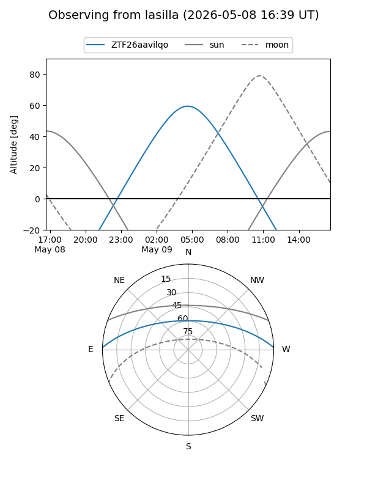
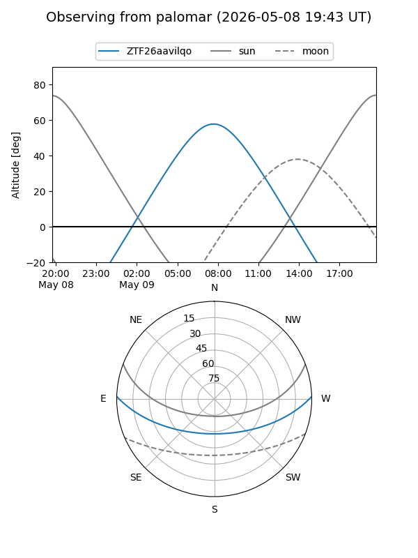

ZTF26aavilqo
Target ZTF26aavilqo at 2026-05-09 09:24
Aliases and brokers:
FINK: link
Lasair: link
ALeRCE: link
alt names
ZTF26aavilqo (ztf,fink_ztf)
Coordinates:
equatorial (ra, dec) = 225.2098,+1.33864
equatorial (HMS+DMS) = 15:00:50.36,+01:20:19.10
galactic (l, b) = (358.6760,+49.66757)
Flags:
Photometry:
last ztfg=18.41
1 ztfg detections
Lightcurve
Visibility


Additional plots